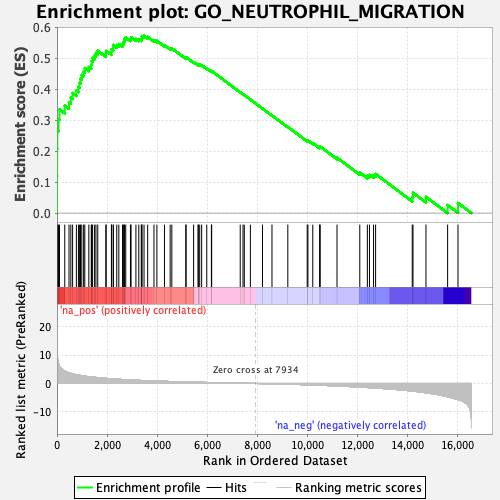

| | | Dataset | DE_genes2 |
| Phenotype | NoPhenotypeAvailable |
| Upregulated in class | na_pos |
| GeneSet | GO_NEUTROPHIL_MIGRATION |
| Enrichment Score (ES) | 0.5718405 |
| Normalized Enrichment Score (NES) | 2.2262416 |
| Nominal p-value | 0.0 |
| FDR q-value | 0.0011904642 |
| FWER p-Value | 0.006 |
Table: GSEA Results Summary

Fig 1: Enrichment plot: GO_NEUTROPHIL_MIGRATION
Profile of the Running ES Score & Positions of GeneSet Members on the Rank Ordered List
| PROBE | GENE SYMBOL | GENE_TITLE | RANK IN GENE LIST | RANK METRIC SCORE | RUNNING ES | CORE ENRICHMENT | | 1 | CXCL3 | | | 1 | 21.432 | 0.1195 | Yes |
| 2 | CCL5 | | | 5 | 15.806 | 0.2074 | Yes |
| 3 | IL23A | | | 12 | 10.743 | 0.2670 | Yes |
| 4 | DYSF | | | 61 | 7.010 | 0.3031 | Yes |
| 5 | ITGB2 | | | 99 | 6.066 | 0.3347 | Yes |
| 6 | PDE4B | | | 310 | 4.393 | 0.3464 | Yes |
| 7 | GBF1 | | | 479 | 3.756 | 0.3572 | Yes |
| 8 | CXCL9 | | | 553 | 3.561 | 0.3726 | Yes |
| 9 | CXCL10 | | | 623 | 3.364 | 0.3872 | Yes |
| 10 | CXCL2 | | | 773 | 3.082 | 0.3953 | Yes |
| 11 | CXCL11 | | | 855 | 2.930 | 0.4067 | Yes |
| 12 | WDR1 | | | 902 | 2.860 | 0.4198 | Yes |
| 13 | RAC1 | | | 938 | 2.812 | 0.4334 | Yes |
| 14 | IL1B | | | 989 | 2.750 | 0.4457 | Yes |
| 15 | RHOG | | | 1063 | 2.650 | 0.4560 | Yes |
| 16 | SAA1 | | | 1109 | 2.592 | 0.4678 | Yes |
| 17 | CXCL1 | | | 1270 | 2.390 | 0.4713 | Yes |
| 18 | CXCL8 | | | 1367 | 2.297 | 0.4783 | Yes |
| 19 | C3AR1 | | | 1383 | 2.286 | 0.4902 | Yes |
| 20 | IL36G | | | 1420 | 2.249 | 0.5005 | Yes |
| 21 | VAV1 | | | 1500 | 2.177 | 0.5079 | Yes |
| 22 | PIP5K1C | | | 1554 | 2.124 | 0.5165 | Yes |
| 23 | CD177 | | | 1626 | 2.065 | 0.5237 | Yes |
| 24 | CCL20 | | | 1950 | 1.792 | 0.5140 | Yes |
| 25 | CCL17 | | | 1961 | 1.785 | 0.5234 | Yes |
| 26 | CCL2 | | | 2172 | 1.637 | 0.5197 | Yes |
| 27 | LGALS3 | | | 2175 | 1.635 | 0.5287 | Yes |
| 28 | S100A12 | | | 2244 | 1.592 | 0.5335 | Yes |
| 29 | CX3CL1 | | | 2246 | 1.590 | 0.5423 | Yes |
| 30 | PIK3CD | | | 2384 | 1.500 | 0.5423 | Yes |
| 31 | TIRAP | | | 2467 | 1.460 | 0.5455 | Yes |
| 32 | MDK | | | 2614 | 1.378 | 0.5443 | Yes |
| 33 | TGFB2 | | | 2647 | 1.364 | 0.5499 | Yes |
| 34 | CCL22 | | | 2678 | 1.350 | 0.5556 | Yes |
| 35 | IL1R1 | | | 2697 | 1.339 | 0.5620 | Yes |
| 36 | CSF3R | | | 2743 | 1.310 | 0.5666 | Yes |
| 37 | PPBP | | | 2931 | 1.224 | 0.5621 | Yes |
| 38 | IL36A | | | 2955 | 1.213 | 0.5674 | Yes |
| 39 | S100A8 | | | 3149 | 1.133 | 0.5620 | Yes |
| 40 | CCL21 | | | 3264 | 1.087 | 0.5611 | Yes |
| 41 | RAC2 | | | 3362 | 1.053 | 0.5611 | Yes |
| 42 | CXCL6 | | | 3386 | 1.044 | 0.5655 | Yes |
| 43 | CD74 | | | 3387 | 1.043 | 0.5714 | Yes |
| 44 | S100A9 | | | 3473 | 1.014 | 0.5718 | Yes |
| 45 | IL36RN | | | 3618 | 0.962 | 0.5684 | No |
| 46 | EDN1 | | | 3869 | 0.875 | 0.5581 | No |
| 47 | CCL19 | | | 3986 | 0.841 | 0.5558 | No |
| 48 | PF4V1 | | | 4288 | 0.752 | 0.5417 | No |
| 49 | IL1RN | | | 4515 | 0.689 | 0.5318 | No |
| 50 | CAMK1D | | | 4582 | 0.666 | 0.5315 | No |
| 51 | JAGN1 | | | 5142 | 0.532 | 0.5004 | No |
| 52 | EDN2 | | | 5149 | 0.530 | 0.5030 | No |
| 53 | XG | | | 5451 | 0.460 | 0.4873 | No |
| 54 | PECAM1 | | | 5633 | 0.420 | 0.4786 | No |
| 55 | ADAM8 | | | 5635 | 0.419 | 0.4809 | No |
| 56 | PREX1 | | | 5694 | 0.406 | 0.4796 | No |
| 57 | IL1A | | | 5772 | 0.390 | 0.4771 | No |
| 58 | CXCL13 | | | 5976 | 0.350 | 0.4668 | No |
| 59 | DAPK2 | | | 6161 | 0.314 | 0.4573 | No |
| 60 | ITGA9 | | | 6172 | 0.311 | 0.4584 | No |
| 61 | CXCR2 | | | 7311 | 0.096 | 0.3898 | No |
| 62 | CKLF | | | 7422 | 0.078 | 0.3835 | No |
| 63 | SYK | | | 7474 | 0.070 | 0.3808 | No |
| 64 | CXCL5 | | | 7716 | 0.030 | 0.3664 | No |
| 65 | VAV3 | | | 8200 | -0.042 | 0.3372 | No |
| 66 | PF4 | | | 8578 | -0.107 | 0.3149 | No |
| 67 | CXADR | | | 9210 | -0.243 | 0.2779 | No |
| 68 | CCL26 | | | 9984 | -0.456 | 0.2334 | No |
| 69 | C5AR1 | | | 10012 | -0.464 | 0.2344 | No |
| 70 | THBS4 | | | 10206 | -0.527 | 0.2256 | No |
| 71 | SLAMF8 | | | 10478 | -0.612 | 0.2125 | No |
| 72 | BST1 | | | 10503 | -0.624 | 0.2146 | No |
| 73 | CD99L2 | | | 11173 | -0.870 | 0.1787 | No |
| 74 | SLIT2 | | | 12082 | -1.265 | 0.1306 | No |
| 75 | CCR7 | | | 12384 | -1.420 | 0.1202 | No |
| 76 | CD99 | | | 12468 | -1.461 | 0.1233 | No |
| 77 | JAM3 | | | 12631 | -1.550 | 0.1221 | No |
| 78 | ITGA1 | | | 12713 | -1.593 | 0.1261 | No |
| 79 | C1QBP | | | 14175 | -2.666 | 0.0521 | No |
| 80 | MOSPD2 | | | 14205 | -2.697 | 0.0654 | No |
| 81 | MCOLN2 | | | 14723 | -3.268 | 0.0522 | No |
| 82 | PDE4D | | | 15587 | -4.675 | 0.0258 | No |
| 83 | MPP1 | | | 16000 | -5.658 | 0.0323 | No |
Table: GSEA details [plain text format]
Fig 2: GO_NEUTROPHIL_MIGRATION: Random ES distribution
Gene set null distribution of ES for GO_NEUTROPHIL_MIGRATION